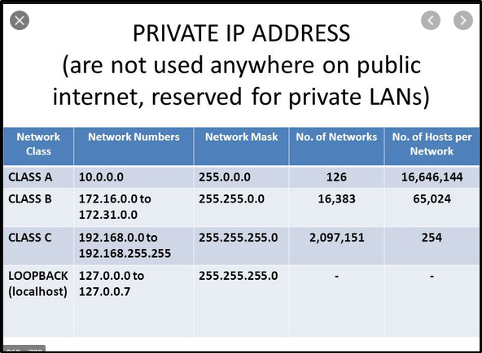

IP address: Having IPv4 even though we're out of address space, using something called NAT (Network Address Translation)
With NAT, private adress spaces are assigned. Addresses that start with 192,168, are private IP adresses and are passed out to publicaddresses.

IP addresses, (IPv4, IPv6) are layer 3 protocols. Layer 3 is a router, so when traffic is routed, it's through an IP adress.